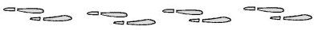
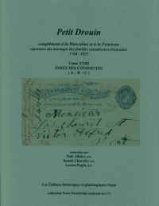

|
|
|
|
Most
of the genealogical
data on the Charette site comes from the work of Brother
Jean-Benoît Charette. For the fourth generation of our
line, according to Brother Benoît, our ancestor is "Jean-Pierre-François".
In fact this is Pierre, as several other sources
call him. But is that really so?
As soon as I began studying this generation, a box of surprises
opened. While searching the web for Pierre's
wife, a Marie Lemay, I found a Marie-Anne Lemay married to a
Joseph Choret, son of Pierre Choret and Angélique Turcot. So
Joseph and Pierre were
brothers!!! But where did this Joseph come from, whom Brother Benoît never
mentions? That is the question, and above all: are we descended from Pierre
or from Joseph? Let's look at the facts... or rather the baptism,
marriage and burial records available in the digitized Drouin
collection, or in other databases such as the PRDH and the BMS.
|
Third generation
Pierre Choret married Angélique Turcot in Charlesbourg on
February 1, 1712.
Only two of their sons reached adulthood, Pierre and Joseph.
The Choret brothers married Lemay sisters.
|
|
|
|
|
Fourth generation
Pierre Choret
Born September 13, 1716,
in Charlesbourg .
Married January 8, 1742,
in Sault-au-Récollet
to Marie Lemay.
Died October 2, 1755, in
Sault-au-Récollet, and buried October 4.
|
Fourth generation
Joseph Choret
Born September 25, 1719,
in Notre-Dame de Montréal.
Married January 8, 1742,
in Sault-au-Récollet
to Marie-Anne Lemay
Died August 29, 1792, in
Sault-au-Récollet, and buried August 30.
|
|
N.B. Marie and Marie-Anne Lemay were sisters, daughters of Ignace
Lemay Delorme and Anne Marie Jeanne Lecompte Lavimodière
(the spelling varies from source to source).
Each couple had a son named Jean-Baptiste.
The Choret cousins
married Lorain sisters.
|
|
|
|
|
Fifth generation
Jean-Baptiste
(Louis)
Born May 10, 1752, in Sault-au-Récollet. Married February 3,
1783, in Rivière-des-Prairies, to Marie-Louise Lorain, daughter of
Paul and Marie-Joseph Rangé.
Jean-Baptiste
apparently lived under the name Louis (Ref.: PRDH);
we have his marriage record under that name. We also have
the marriage contract drawn up before notaire (notary) A. Foucher on January
25, 1783.
|
Fifth generation
Jean-Baptiste
Born March 23, 1749, in Sault-au-Récollet. Married October 13, 1774, in Rivière-des-Prairies, to Marie-Josephte Lorain, daughter of Paul and Marie-Joseph
Rangé.
The
registers of Rivière-des-Prairies parish for the years
1771 to 1774 are missing. We do, however, have the marriage
contract drawn up before notaire Jean-Marie Chatellier on
October 12, 1774.
|

on the
right track...
If we follow the Charette line upward
rather than downward, we know that our ancestor of the
fifth generation is Jean-Baptiste Chauret, husband of
Marie-Josephte Lorrain.
But how can we tell whether this Jean-Baptiste was the son of Joseph or of
Pierre? By consulting the available civil
registers and the notarial contracts obtained from the Archives
nationales, we can state that our ancestor of the fourth
generation is JOSEPH.
So, for this generation
and the next, we
could not rely on Brother Benoît's data, because not only does he attribute
both children named Jean-Baptiste to Pierre, he also mixes up
their wives. There is confusion between Pierre and Joseph in the fourth
generation, and also between the Jean-Baptistes, and their wives, in the
fifth generation.
On this website
devoted to the fourth Charette generation in America,
you will also find information about Pierre,
since he and his brother Joseph, our direct ancestor, are closely linked.
|
|
 Jean-Benoît
Charette, s.c., devoted
part of his life to genealogy. He published marriage
registers for various parishes, mostly in the
Valleyfield area, and, in 1953, the history of his home village, L'Annonciation.
But his masterwork is the
"Généalogie des Charette", published in 1968. Jean-Benoît
Charette, s.c., devoted
part of his life to genealogy. He published marriage
registers for various parishes, mostly in the
Valleyfield area, and, in 1953, the history of his home village, L'Annonciation.
But his masterwork is the
"Généalogie des Charette", published in 1968.
In the introduction to the
book, Brother Benoît writes: "To anyone who asked how long
it took me to put this volume together, I would answer without hesitation:
"Five years of research and seventy years of attachment to my
family, of interest in the settlements founded by my ancestors, in
their way of life and their little stories." Further on, he says: "This genealogy of the
family is necessarily incomplete, because I have not consulted
every register in the province or elsewhere; answers that
I was waiting for did not come; in X..... years another researcher in
the family will carry on this work, which practically has no
end. Errors and omissions have crept in
unintentionally, due to distraction and
inattention ...."
Brother Benoît had two major
handicaps in
dealing properly with the fourth generation:
he did not know
that Joseph existed, nor the date of Pierre's death.
Joseph Choret was born on September 25, 1719, in
Notre-Dame parish in Montréal. In fairness to Brother
Benoît, the registers of that parish are enormous
and hard to consult.
To add to the confusion, the two Choret brothers, Pierre and Joseph,
married
two Lemay sisters on January 8, 1742. Since
the Lemay wives' first names vary from document to document, sometimes
Marie, Marie-Anne, Marianne, Marie Catherine, and
others...
the genealogical research gets complicated..
Another
important fact was missing for the genealogist : the
date of Pierre's death,
October 2, 1755, in Sault-au-Récollet. Brother
Benoît has him dying on August 30, 1793, but that date would rather be
Joseph's death; other sources say 1792. Had he known this, he would have
understood that the children born after 1755 necessarily had another
father... and he would have looked for other leads...

 Brother
Benoit took part in the Petit Drouin.
It is a directory of Catholic marriages
in Québec from 1760 to 1825. The series comprises 23 volumes
of marriages listed by the men's names, and an index by the women's names
in 5 volumes. The
Petit Drouin is an essential research tool for
genealogists; it can be found at the Archives nationales.
|
|
|
 |
|
(1) Jean-Baptiste
Decogne.
Note added by Brother Benoît: "This family name, Decogne, can easily be
linked to the name of the parish of Notre-Dame de Cogne, in the city of La
Rochelle," where the first ancestor, Mathieu Choret, married and from where he
left for New France. Back to the text
(2) Jean-Baptiste Chorel dit
Saint-Romain was the son of Jean-Baptiste St-Romain, a native of
France. The latter had married Marie-Madeleine Dubé on February
9, 1728, in Charlesbourg. Their son Jean-Baptiste, born on January
28, 1733, in Montréal, married Marie-Jeanne Aubry, widow of Charles Jérôme,
in St-Laurent on February 23, 1756. So when he
was godfather to Pierre Choret's son in 1752, he was still single.
(Data taken from the Tanguay Dictionary.) Back to the text
|
|